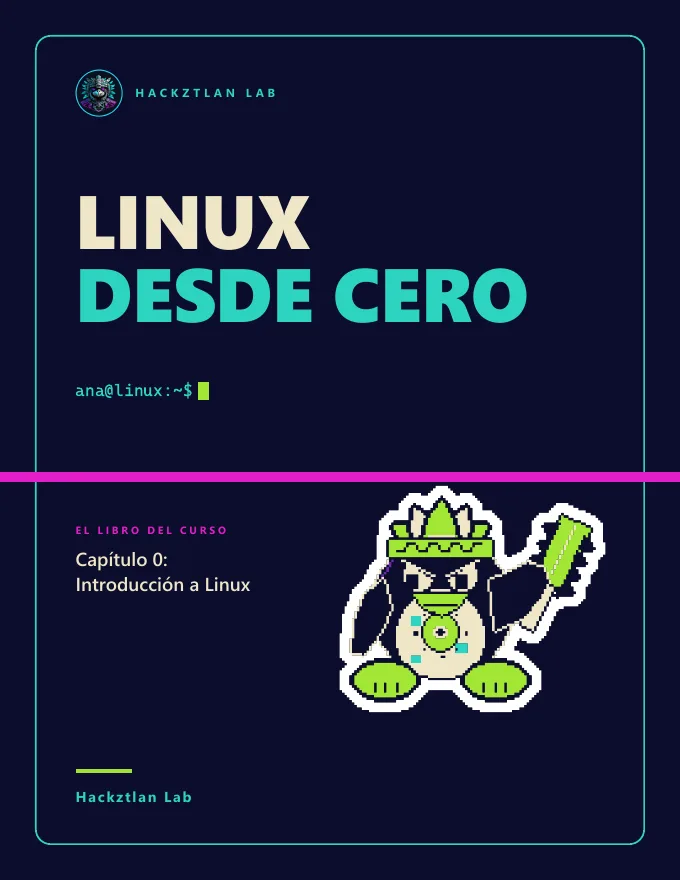
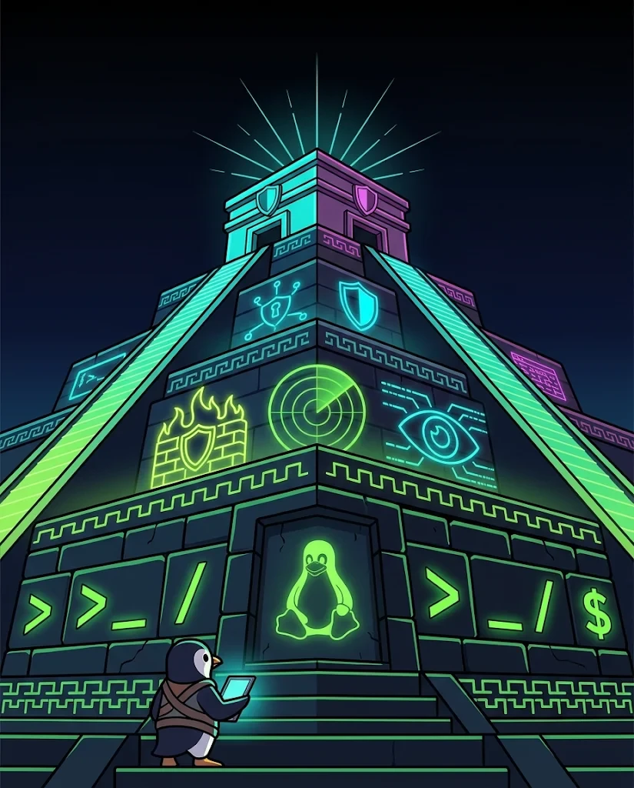

Aprende a defenderte.
Empieza por la base.
Clases gratis, en orden y con comandos reales. Primero Linux, después redes, el SOC y el análisis de amenazas. Sin humo y sin necesitar ser experto.
Elige por dónde empezar.
Cada curso va en orden, con comandos reales y casos de la vida diaria. Toca uno para ver sus clases.

Lo que el video no alcanza a contar.
Cada clase tiene su capítulo: más a fondo, con dibujos, trucos de terminal, errores típicos y retos para practicar.
- Comandos probados en un Ubuntu Server real, con su salida tal cual.
- Revisado por un principiante, alguien con nivel medio y un experto en Linux.
- Fuentes citadas, para que sepas de dónde sale cada dato.
El Capítulo 0 es abierto para todos: léelo aquí mismo, con el video de su clase a un clic. Los siguientes llegan primero a los miembros de Patreon, con el video de su clase en MP4.

Primero la base.
El SOC viene después.
Un analista que no entiende el sistema que defiende solo copia y pega. Por eso vamos escalón por escalón.
- LinuxTerminal, archivos, permisos, procesos, logs. Estás aquí.
- Redes y firewallCómo viaja un paquete y cómo se filtra, con OPNsense. Ya empezó.
- El SOC en casaWazuh y amigos: ver lo que pasa en tu red y reaccionar.
- Analizar amenazasCómo funcionan los ataques reales, explicados para defenderte.
Ciberseguridad explicada, no recitada.
Vulnerabilidades web
SQLi, XSS, IDOR, CSRF, SSRF y más: cómo funcionan y cómo se cierran, animado.
Análisis de ataques
Robo de cuentas, ClickFix, RATs: el mecanismo paso a paso, con fuentes públicas.
Monta tu SOC
Firewall, DNS que bloquea y Wazuh, armados en un laboratorio en casa.
Si te sirve, apoya al canal.
En Patreon recibes primero cada capítulo del libro en PDF con el MP4 de su clase, más retos para practicar. Y ayudas a que el curso siga gratis para todos. También puedes apoyar con la suscripción de Facebook.